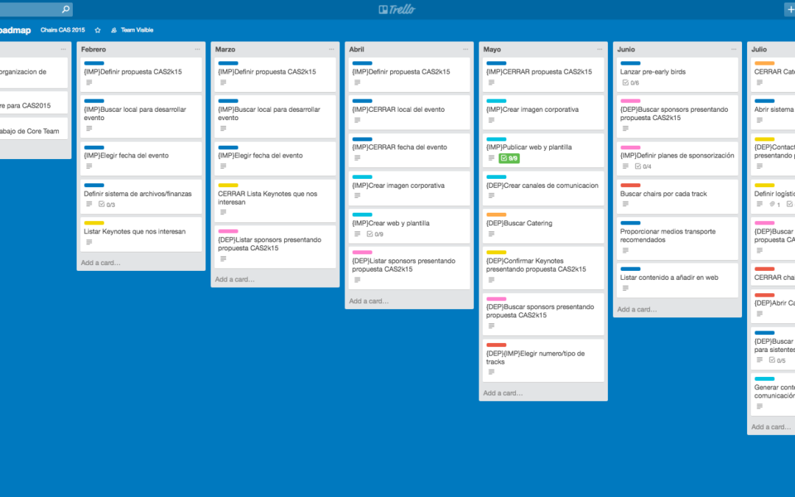
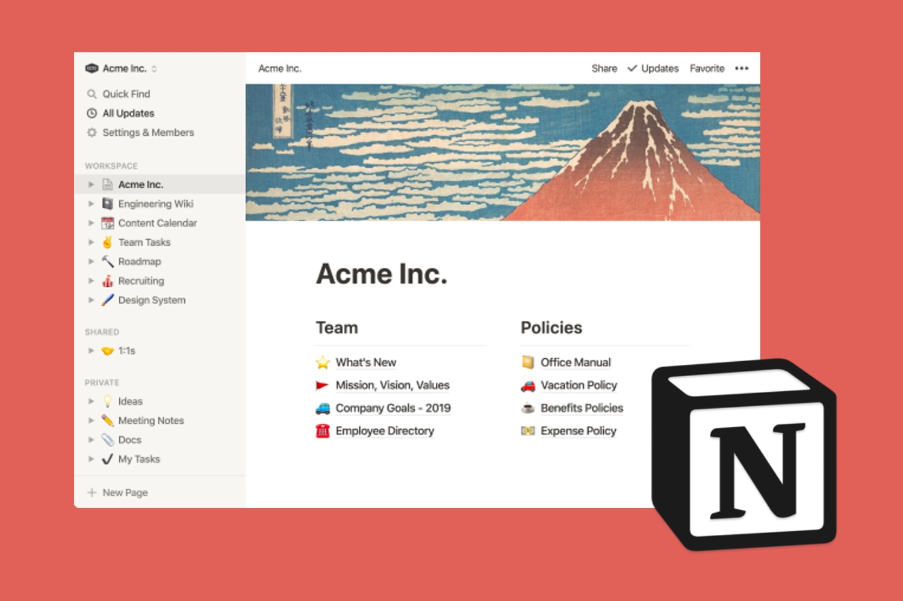
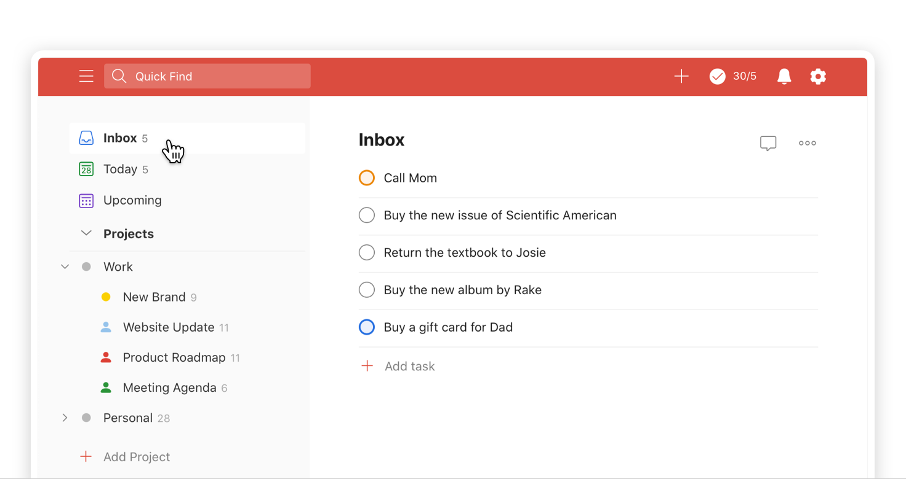
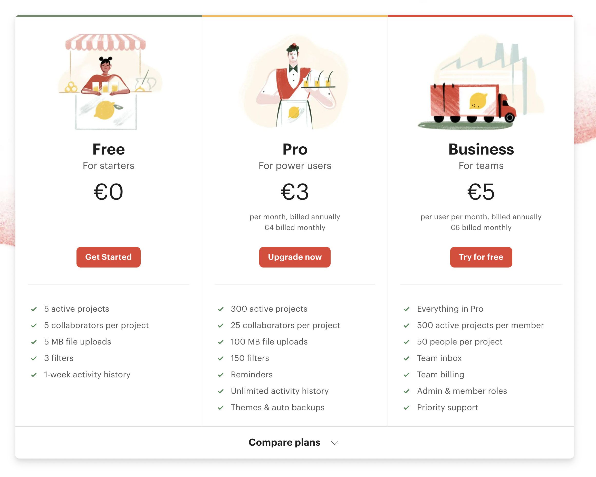

TRELLO
https://todoist.com/es/home
V.2.12.3
¿Qué es Trello y para que sirve?
Trello es una aplicación basada en el método Kanban y sirve para gestionar tareas permitiendo organizar el trabajo en grupo de forma colaborativa mediante tableros virtuales compuestos de listas de tareas en forma de columnas. Es perfecta para la gestión de proyectos ya que se pueden representar distintos estados y compartirlas con diferentes persona que formen el proyecto. Con ella se intenta mejorar las rutinas de trabajo de un equipo generando prioridades, tiempos, avisos y otras opciones perfectas para organizar un proyecto en el que colaboran varias personas.
Financiamiento
En julio de 2014, Trello se separó de Fog Creek, se convirtió en Trello, Inc. y nombró al cofundador de Fog Creek, Michael Pryor, su director general. La empresa recaudó 10,3 millones de dólares en una ronda de financiación de serie A que lideraban Spark Capital e Index Ventures.
Trello, Ink
En enero de 2011, Fog Creek Software lanzó un prototipo que esperaba resolver algunas incidencias de planificación de gran importancia. Se llamaba Trellis. El desarrollo a tiempo completo comenzó poco después.Tras una versión beta cerrada, Trello se lanzó en septiembre de 2011 con aplicaciones para la web y iPhone. En el verano del año 2012, Trello llegó a los 500 000 miembros y lanzó la aplicación de Trello para Android y se realizaron correcciones de errores y mejoras de rendimiento.En julio de 2014, Trello se separó de Fog Creek, se convirtió en Trello, Inc. y nombró al cofundador de Fog Creek, Michael Pryor, su director general. La empresa recaudó 10,3 millones de dólares en una ronda de financiación de serie A que lideraban Spark Capital e Index Ventures. Trello contaba con más de 4,75 millones de usuarios.En mayo de 2015, Trello se volvió internacional y tradujo sus soluciones a portugués brasileño, alemán y español.A principios del año 2017, Atlassian compró Trello y comenzó un nuevo capítulo en el empoderamiento de los equipos a escala global.
Alternativas
Notion
Ventajas
Es muy intuitivo, basta que entiendas que son los tableros, las listas y las tarjetas y es todo. En pocos minutos te mueves a tu gusto en Trello.Es muy velozAtajos de teclado. Creo que esta es una de las mejores características, una vez que conoces los atajos (de una sola tecla) tu productividad se dispara y tareas como buscar tableros, asignar tarjetas, filtrar por tags, etc. son solo presionar una tecla.Actualizaciones constantes. Una mirada a su blog nos muestra que trabajan muy duro en mejoras e integraciones.Muchas integraciones con terceros.Se puede asignar una tarea a más de una persona
Desventajas
En vista de que en Trello todo se encuentra organizado en tableros, al momento de llevar a cabo proyectos grandes puede llegar a ser tedioso el momento de crear nuevas tareas y/o asignaciones.No cuenta con etiquetas globales de proyecto, si no que en cada tablero se deben establecer las etiquetas.


TODOIST
https://todoist.com/es/home
V.8.0.2
¿Qué es Todoist y para que sirve?
odoist es un gestor de tareas multiplataforma con un bonito diseño, que te permite gestionar tu productividad en el día a día de manera sencilla, cómoda e intuitiva.Todoist te permite organizar tus tareas por proyectos. Puedes crear nuevos proyectos o subproyectos y asignar tareas y subtareas a cada uno. Puedes usarlo tanto a nivel personal, con proyectos como “compras” o “recordatorios”, pero también puedes gestionar tus proyectos profesionales, compartiendo las tareas con otros usuarios.
Financiamiento
Todoist se financia a base de las cuentas prémium que compra el público.
Compañia
Esta empresa creció con la intención de crear una agenda que hiciera la vida de mucha gente más fácil. La audiencia creció. El equipo creció. Los informes de errores y las solicitudes de funciones también aumentaron. En algún punto de la línea, toda esa energía para ayudar a las personas estresadas a vivir vidas más tranquilas y organizadas se fusionó en una empresa real con una misión real. En la actualidad, Doist es un primer equipo remoto de 93 personas que representan a 41 nacionalidades en 39 países y 75 ciudades.Durante los últimos 13 años, Todoist ha pasado de ser un proyecto personal a convertirse en una organización líder en el mercado. Millones de personas en todo el mundo confían en Todoist todos los días para realizar un seguimiento.En 2017, lanzaron un segundo producto: una aplicación de comunicación en equipo llamada Twist, diseñada para un trabajo en equipo más tranquilo, organizado y transparente.
Alternativas
Tiddlywiki
Ventajas
Funciona en varios entornos y con diferentes sistemas operativos.
Puedes establecer recordatorios y fechas límites para las tareas.
Comparte proyectos y opciones con los demás miembros de tu equipo.
Suscripciones un poco más baratas pero sin funcionalidades esenciales.
Interfaz simple para mantenerte organizado(a).
Desventajas
Debes aprender cómo funciona de principio a fin y lleva tiempo.
Tienes jerarquías de tareas muy limitada por día o por proyecto.
Si deseas recordatorios, debes pasarte a la versión Premium.
Es difícil dejar un comentario en las tareas de un proyecto.
Cuenta con pocas integraciones y aplicaciones asociadas.